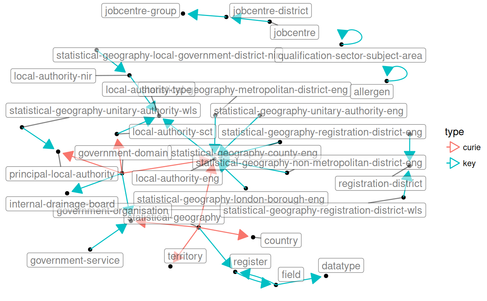

rr_links.RdRegisters can link to each other either by a field with the "register"
property, or via CURIEs. See rr_key_links() and rr_curie_links() for
more about that. rr_links() returns a data frame of edges.
rr_links(x)
| x | Object of class |
|---|
#> # A tibble: 5 x 4 #> from to type field #> <chr> <chr> <chr> <chr> #> 1 statistical-geography register key register #> 2 statistical-geography country curie area #> 3 statistical-geography territory curie area #> 4 statistical-geography government-organisation curie organisation #> 5 statistical-geography local-authority-eng curie organisation#> # A tibble: 1 x 4 #> from to type field #> <chr> <chr> <chr> <chr> #> 1 allergen allergen key allergen-group#> # A tibble: 30 x 4 #> from to type field #> <chr> <chr> <chr> <chr> #> 1 field datatype key datatype #> 2 field register key register #> 3 government-service government-o… key government-… #> 4 local-authority-sct local-author… key local-autho… #> 5 register field key fields #> 6 statistical-geography-unitary-authority-wls principal-lo… key principal-l… #> 7 statistical-geography register key register #> 8 statistical-geography country curie area #> 9 statistical-geography territory curie area #> 10 statistical-geography government-o… curie organisation #> # ... with 20 more rowsif (require(tidygraph) && require(ggraph)) { rr_register("statistical-geography") %>% rr_links() %>% as_tbl_graph() %>% ggraph(layout = "nicely") + geom_edge_fan(aes(alpha = ..index..), show.legend = FALSE) + geom_edge_loop() + geom_node_label(aes(label = name)) + theme_void() edge_arrow <- arrow(length = unit(4, "mm"), type = "closed") registers %>% rr_links() %>% dplyr::distinct(from, to, type) %>% as_tbl_graph() %>% ggraph(layout = "nicely") + geom_node_point() + geom_edge_fan(aes(colour = type), arrow = edge_arrow, end_cap = circle(2, 'mm')) + geom_edge_loop(aes(colour = type), arrow = edge_arrow, end_cap = circle(2, 'mm')) + geom_node_label(aes(label = name), repel = TRUE, alpha = .5) + theme_void() }